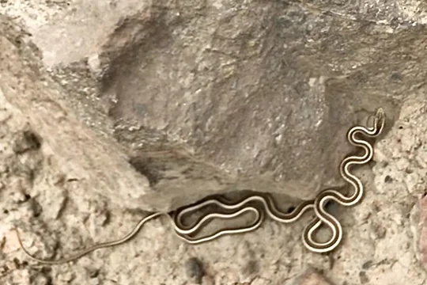
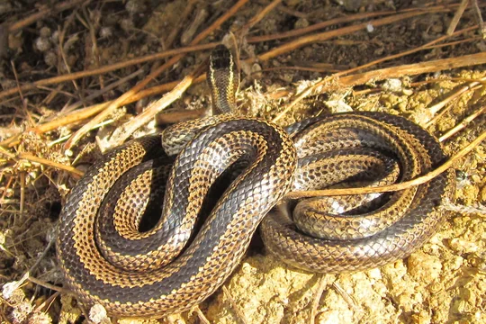
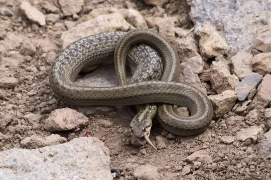
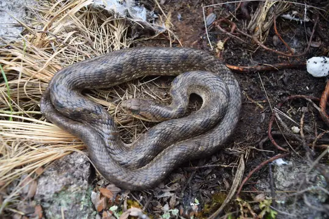
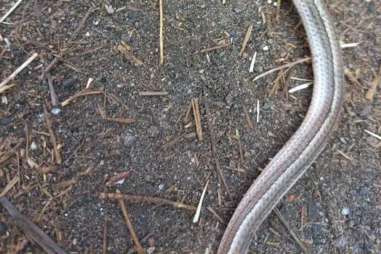

Snakes of Chile
5 living snake species are recorded in Chile in SnakeList: 3 venomous and 2 non-venomous, from 1 family.
- 5living species
- 3venomous
- 2non-venomous
- 1family
Danger to people
- 0harmful to people
- 0dangerously venomous
- 3mildly venomous
- 0giant constrictors
- 2harmless
Harmful = dangerously venomous + giant constrictors. Harmless = not venomous and not a giant constrictor. Mildly venomous snakes have no serious bites to people documented. Any snake can bite.
These totals count the unique living snake species SnakeList records in Chile. A species counts if it is recorded anywhere in the country, so not every snake lives in every part of it.
In SnakeList’s checklist filters
How many of the 5 living species here each filter in the SnakeList app picks out.
Snake family1 type, 1 family
Type
- 5Colubrid
Family
- 5Colubridae
Habitats7 habitat groups
- 2Rainforests
- 2Forests & woodlands
- 1Savannas & grasslands
- 4Deserts & dunes
- 1Mountains & rocks
- 1Around people
- 2South America
Habitats are estimated from where each snake is recorded and what kind of snake it is, as in the app; a snake can count in several.
Characteristics3 venomous, 0 constrictors
- 3venomous
- 2non-venomous
- 0constrictors
- 0non-constrictors
- 5constriction not documented
- 0snake eaters
Constrictor and Non-constrictor count only snakes whose family or genus is documented as constricting or not; the rest are not documented.
Other filters0 popular, 2 rare
- 0popular
- 5uncommon
- 5exotic
- 0invasive
- 1common
- 2rare
- 0no photos
- 0extinct
- 0harmful
- 2low risk
Species
Showing 5 species

Andean RacerPseudalsophis elegans
Chilean Green RacerPhilodryas chamissonis
Chilean Slender SnakeTachymenis chilensis
Peru Slender SnakeTachymenis peruviana
Schmidt's Green RacerIncaspis tachymenoides
No snakes in Chile match.
Chile’s snakes in numbers
- Families: Colubridae 5.
- 1 is recorded in no other country or territory in SnakeList: Chilean Green Racer.
How precisely they are recorded
Of the 5 living species recorded in Chile, 4 are recorded by region in SnakeList’s data; 1 is recorded only for Chile as a whole, so the region pages list it as possible rather than recorded. SnakeList records each species by region, not by exact spot, so a species listed for a region may live in only part of it.
Regions
The regions where SnakeList records snakes, with how many living species are recorded in each. Each page has its species, venomous snakes, families, the species found only there, its cities and neighbours.
- Antofagasta 1 species
- Araucanía 1 species
- Arica y Parinacota 3 species
- Atacama 1 species
- Biobío 1 species
- Coquimbo 1 species
- Maule 1 species
- Ñuble 1 species
- O'Higgins 1 species
- Santiago 1 species
- Tarapacá 1 species
- Valparaíso 1 species
No place matches that.
Cities
Its biggest cities, biggest first. SnakeList records snakes by region, not by city, so each city page shows the species recorded in its region and, separately, those only possible there - not species confirmed in the city.
- Santiago Santiago Region
- Puente Alto Santiago Region
- Antofagasta Antofagasta Region
- Viña del Mar Valparaíso Region
- Valparaíso Valparaíso Region
- Talcahuano Biobío
- San Bernardo Santiago Region
- Temuco Araucanía
- Iquique Tarapacá
- Concepción Biobío
- Rancagua O'Higgins
- La Pintana Santiago Region
No place matches that.